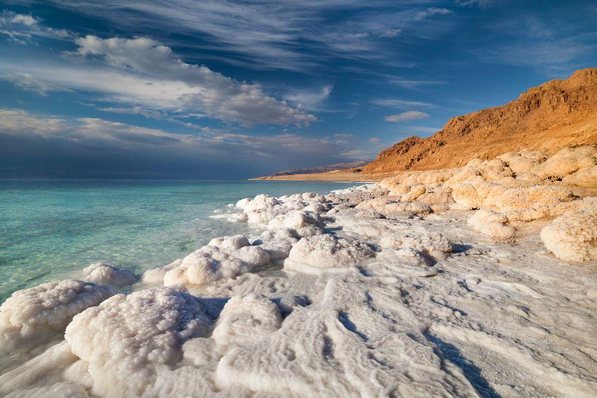

يُعد البحر الميت من أشهر المعالم السياحية في الأردن، ويقع في منطقة الأغوار. ويتميز بأنه أخفض منطقة على سطح اليابسة، كما أن مياهه تحتوي على نسبة عالية من الأملاح والمعادن. ويشتهر البحر الميت بطبيعته الجميلة وطينه الغني بالمعادن، ويزوره السياح للاستمتاع بمناظره الطبيعية.